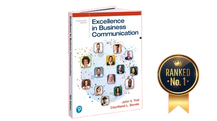

FALL 2024, ISSUE 2,
FROM BOVEE AND
THILL
Busniess Communication Educator Resources:
Essential Updates & Power Tips
Critical Failures in Teaching Busniess
Communication and How
to Fix Them
Welcome to this issue of our newsletter! We've curated a must-read collection of articles we're written to elevate your busniess communication courses. From uncovering critical teaching failures to learning from Dolly parton's communication genius, transformming negative feedback into excellence, and exploring Al's creative potential-there's something for every educater. Dive in, discover new strategies, and enchane your teaching with these insightful reads!
14 Critical Failures in Teaching Business Communication – and How to Fix Them
Excellence in Business Communication, 14th Edition, is more than just a textbook; it's a comprehensive learning system designed to develop well-rounded, effective business communicators. By incorporating research-based principles from diverse fields, it creates an engaging, practical, and relevant learning experience that prepares students for the complex communication challenges of the modern business world.
14 Critical Failures in Teaching Business Communication – and How to Fix Them
Excellence in Business Communication, 14th Edition, is more than just a textbook; it's a comprehensive learning system designed to develop well-rounded, effective business communicators. By incorporating research-based principles from diverse fields, it creates an engaging, practical, and relevant learning experience that prepares students for the complex communication challenges of the modern business world.
The Dolly Effect: Revolutionizing Business Communication Through Authenticity and Strategy
Dolly Parton exemplifies the pinnacle of strategic communication in the business world. Her multifaceted career spans music, entertainment, entrepreneurship, and philanthropy, offering a rich tapestry of lessons for business communication professionals and students alike. This comprehensive case study delves into Parton's communication strategies, exploring how her approach can inform and inspire effective business practices.
Turning Negative Student Feedback into a Path to Excellence: A Guide for Business Communication
In today's competitive academic environment, student evaluations significantly impact an instructor's career. Negative evaluations can jeopardize job security, career advancement, and even departmental funding. This highlights the importance of creating a positive learning environment that enhances student satisfaction, especially in business communication, where skills are highly valued by employers. By adopting the strategies in this article, instructors can boost student satisfaction and prepare students for professional success.
The AI Revolution in Visual Creativity: From Canine Chefs to Industry Innovations
In recent years, AI-generated imagery has revolutionized the landscape of visual creativity, enabling the creation of scenes that blend the familiar with the fantastical. Consider the whimsical image before us: a Golden Retriever, donning a chef's hat and apron, kneading dough in a cozy kitchen. This charming scene, while impossible in reality, exemplifies how AI can bring our wildest imaginations to life.
Excellence in Business Communication, 14th Edition
gives Your students the neuroscience
advantage.
Neuroscience helps your students understand the most effective way to structure messages, use visuals, and evoke emotional responses, all crucial for compelling business communication.
By leveraging these insights, your Student
will be able to design more
persuasive
and impactful communication strategis that resonate with audiences
Order an examination copy of Excellence in Business Communication today!
Enhancing Student Value in Business Communication: Innovative Approaches for Instructors
Instructors play a vital role in adding value to students' learning experiences, especially in a business communication course where practical skills are essential. By identifying pain points, addressing unmet needs, and aligning value creation with teaching goals, instructors can significantly enhance student outcomes.
Engaging Minds, Inspiring Success: Why Excellence In Business
Communication Is
the Right Choice for Your Course

Grounded in research, focused on results
Excellence in Business Communication goes beyond traditional textbook
content, offering a
dynamic and
innovative learning experience that will motivate your students, deepen their understanding, and
empower them
to become effective and impactful communicators
1. Adopting a Research-Driven Approach to learning
2. Empowering Students with Essential Skills for Today's World
3. Cultivating Effective and Impactful communicators
4. Forestering a Growth Mindset and LifeLong Learning
Uncover the hottest topics and trends in business communication with the latest issues of these 11 must-read magazines!
Teaching a Modern Business Communication Course
Business Communication 2.0: Social Media and Digital Communication
Teaching Interpersonal Communication in a Business Communication Course
Teaching Business Communication and Employment
Teaching Visual Communication in a Business Communication Course
Business Presentations in a Business Communication Course
Exclusive Teaching Resources for Business Communication Instructors
How the Mobile Revolution Is Changing Business Communication
Teaching Intelligent Technologies and Artificial Intelligence in a Business Communication Course
Bovee and Thill's Most Popular Business Communication Online Magazine Posts
Teaching Business Communication and Workplace Issues
In this video, we explore Excellence in Business Communication, 14th Edition, a standout textbook for mastering effective communication in the business world. We highlight its real-world case studies, engaging exercises, and innovative tools like MyLab for Business Communication, offering students dynamic learning experiences through simulations, assessments, and practical writing assignments.

Courtland L. Bovee
Bovee & Thill LLC | Author of Business Communication Today, Excellence in Business Communication, and Business in Action
Connect with me on Linkedin
Join Today!
Teaching Business Communication On
This group is a discussion forum exploring all aspects of teaching business communication with more than 3,000 members.
Subscribe today!
Bovee and Thill’s Business Communication Blog
Go to the “Subscribe” section in the right-hand column of the page. Get insights and commentary from the authors of the world's leading business communication textbooks, plus complimentary resources for classroom use.